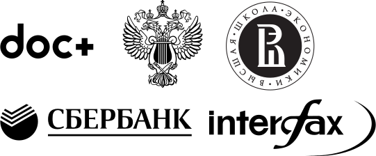

Проект Natasha — набор Python-библиотек для обработки текстов на естественном русском языке
Бурятия и Забайкальский край переданы из Сибирского федерального округа (СФО) в состав Дальневосточного (ДФО). Соответствующий указ подписал президент Владимир Путин, документ опубликован на официальном интернет-портале правовой информации. Этим же указом глава государства поручил руководителю своей администрации утвердить структуру и штатную численность аппаратов полномочных представителей президента в этих двух округах. После исключения Бурятии и Забайкалья в составе СФО остались десять регионов: Алтай, Алтайский край, Иркутская, Кемеровская, Новосибирская, Омская и Томская области, Красноярский край, Тува и Хакасия. Действующим полпредом президента в этом округе является бывший губернатор Севастополя, экс-заместитель командующего Черноморским флотом России Сергей Меняйло. В составе ДФО отныне 11 субъектов. Помимо Бурятии и Забайкалья, это Камчатский, Приморский и Хабаровский края, Амурская, Еврейская автономная, Магаданская и Сахалинская области, а также Якутия и Чукотка. Дальневосточное полпредство возглавляет Юрий Трутнев, совмещающий эту должность с постом вице-премьера в правительстве России. Федеральные округа были созданы в мае 2000 года в соответствии с указом президента Путина.
Примеры:
Путин уменьшил Сибирский федеральный округ,
«Танковая орда» на границе России с Украиной попала на спутниковые снимки,
Додона оставили с протянутой рукой,
Назван самый грязный город Европы,
На вечеринке в Москве выступит Art Department,
Путин убрал Полтавченко с поста губернатора Петербурга,
Набиуллину в Чечне покатали на багги,
UFC официально отстранил напавшего на Макгрегора российского бойца,
Испания согласилась поддержать Brexit,
В Москву пожалуют пять талибов.
(Shift+Enter)
Синтаксический разбор
Первое предложение:
Морфология
Первое предложение:
NER
Библиотеки
Natasha
- Решает базовые задачи обработки естественного русского языка: сегментация на токены и предложения, морфологический и синтаксический анализ, лемматизация, извлечение, нормализация именованных сущностей.
Yargy
- Аналог яндексового Томита-парсера. Использует словари и правила, извлекает структурированную информацию из текстов на естественном русском языке.
Razdel
- Делит текст на слова и предложения.
Corus
- Коллекция ссылок на публичные русскоязычные датасеты.
Navec
- Набор компактных предобученных эмбедингов для русского языка.
Slovnet
- Качественные модели для обработки естественного русского языка: морфологический теггер, синтаксический парсер, NER-теггер.
Ipymarkup
- Инструменты для визуализации NER-разметки и синтаксических связей.
Nerus
- Большой корпус с автоматической разметкой именованных сущностей, морфологии и синтаксиса.
Naeval
- Сравнение инструментов проекта Natasha с другими открытыми решениями.
Принципы
Качество
- Наташа — не научный проект. Нет цели использовать современные методы и побить SOTA. Важно оценить решение на публичных бенчмарках, постараться занять высокое место. Выбираем правила и словари, когда они решают задачу. Смело жертвуем качеством в пользу производительности.
Python
- Все библиотеки проекта реализованы на Python. Поддерживается Python 3.5+, PyPy3.
Открытость
- Все решения распространяются под лицензией MIT.
Производительность
- Важно сравнить размер модели, потребление памяти, скорость работы с другими открытыми решениям. Постараться занять высокое место. Увлекаться не стоит, проект использует Python, решение априори не будет супер-быстрым.
Качество кода
- Библиотеки проекта обложены тестами, код проверяется линтерами, настроен CI. Смело выбираем понятность кода вместо небольшого прироста производительности.
Сравнение с DeepPavlov
В 2018-2019 годах проект DeepPavlov опубликовал набор качественных открытых решений для работы с русским языком.
| Natasha | DeepPavlov |
|---|---|
| Решение нескольких базовых задач: сегментация, морфология, синтаксис, NER | Много моделей, специализация на диалоговых системах, решает базовые и сложные задачи: QA, диалог |
| Коммерческая разработка, практичность | Наука |
| Компактные модели: малый размер, работают на CPU | Тяжёлые модели: большое файлы с весами, много RAM, требуют GPU |
| Только русский язык | Русский, английский, некоторые славянские |
| Набор библиотек | Монолит |
| PyTorch | TensorFlow |
Кто использует

Поддержка
 natural_language_processing — чат пользователей, разработчиков проекта.
natural_language_processing — чат пользователей, разработчиков проекта.
Лаборатория разрабатывает сервисы и коробочные продукты с использованием технологии Natasha, оказывает услуги анализа данных для российских компаний.